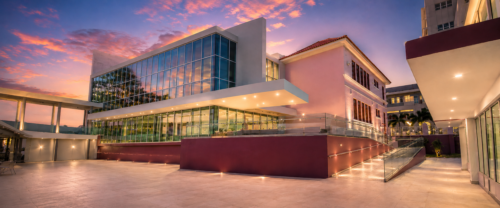

Próximamente · Guaynabo
La música de Puerto Rico tiene una nueva casa.
Un recorrido vivo por los sonidos, las historias y los protagonistas que forman parte de nuestra identidad.
Nuestra misión
Conservar nuestra historia.
Hacerla sonar.
El Museo de la Música de Puerto Rico será un espacio cultural, educativo y turístico dedicado a investigar, interpretar y divulgar el patrimonio musical puertorriqueño.
A través de experiencias interactivas, piezas históricas y presentaciones artísticas, conectaremos generaciones con la música que nos define.
Puerto Rico,
género por género.
Más que una exhibición
Un lugar para escuchar,
recordar y celebrar.
Próximamente
La historia está por comenzar.
Conoce las novedades del Museo de la Música de Puerto Rico mientras nos preparamos para abrir nuestras puertas.